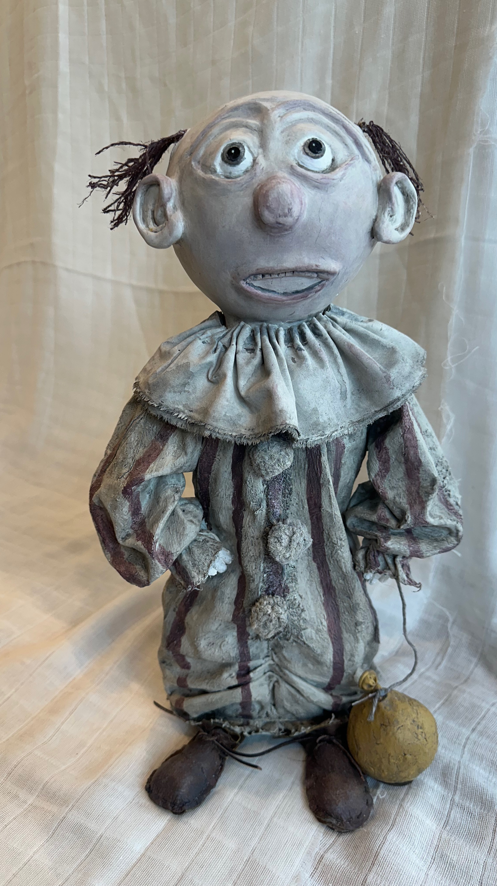
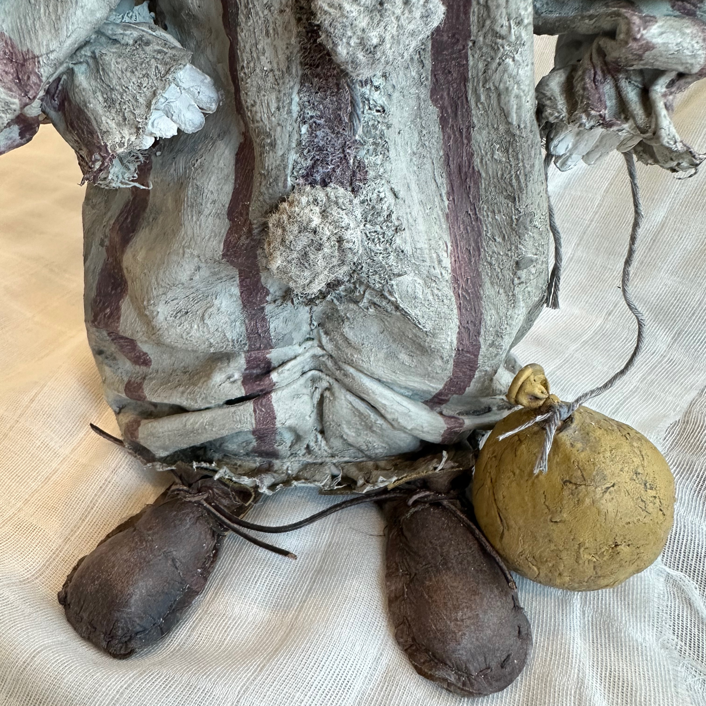
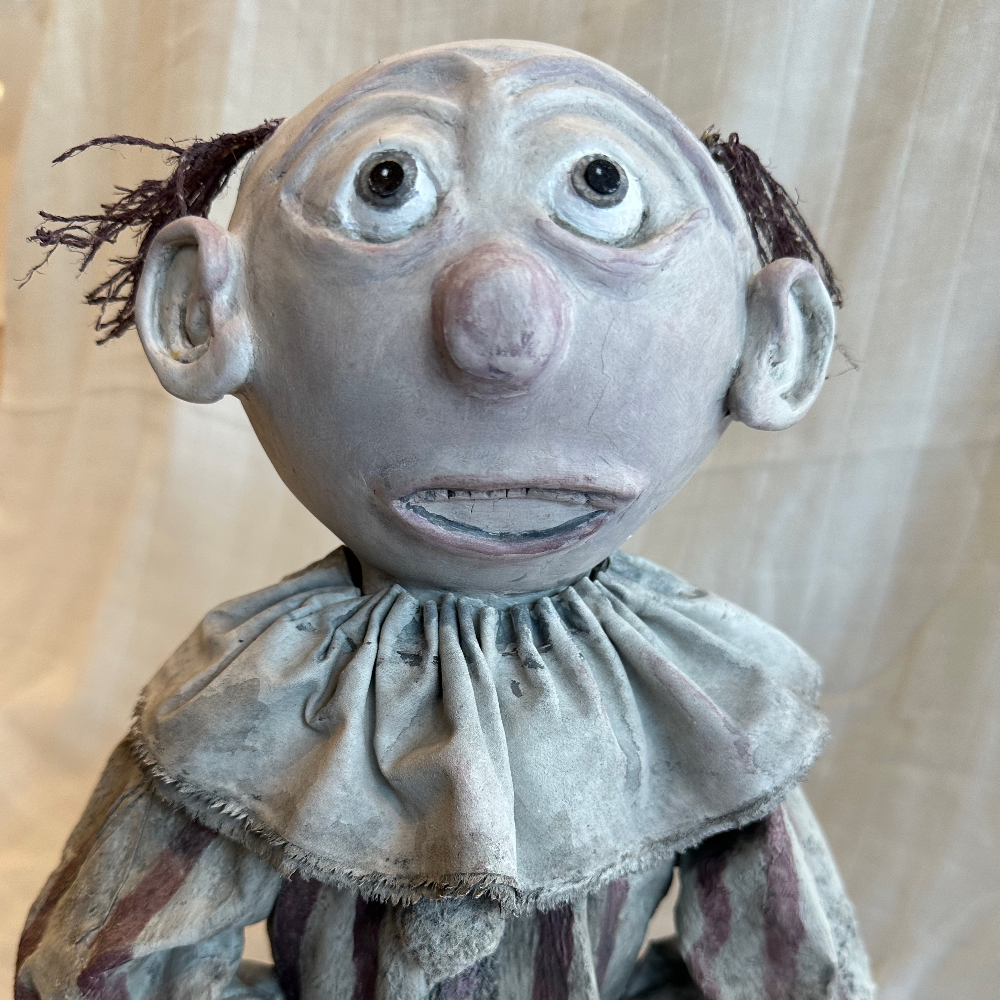

Jasper Hollow


Jasper Hollow explores the experience of abandonment — of being left behind, forgotten, or feeling disconnected from those who once mattered most.
His costume is worn. His shoes are scuffed and unlaced. His balloon has faded with time, and cracks trace their way across his face. Yet Jasper remains standing, still holding the string and still waiting.
Through weathered surfaces, frayed fibres and deliberately imperfect details, Jasper reflects on the quiet wounds that can remain long after others have gone — the longing to belong, the fear of being forgotten, and the small thread of hope that refuses to disappear.
And beneath it all sits the question:
Is somebody coming back?
Jasper Hollow is a one-of-a-kind, hand-built mixed media sculpture from the What Remains collection, continuing KK Art Space’s exploration of fragility, resilience and the traces our experiences leave behind.
Additional views


